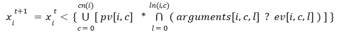
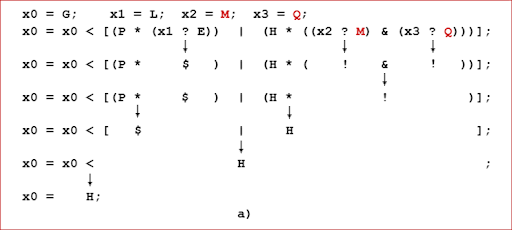
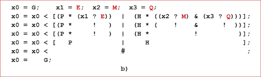
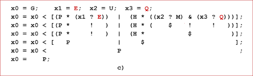
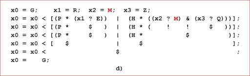

While studying behavior of dynamical systems phenomenologically - that is not by delving into their internal machinery, but instead considering only abstract collections of their properties, changing over time - we, following fundamental principles of mathematical modeling, tend to explain causes of changes of states of the properties by existence of certain dependence relations of the states of properties on changes of states of the same or some other properties; and, optionally, on the effects of external systems or the environment.
Objective of this page is to introduce Qualitative Dynamical Systems Mathematical Modeling Technique, developed as part of the Kaleidoscope Project, and to describe modeling solutions proposed by the Technique. The purpose of this technique and its solutions is to enable creating qualitative systems simulation models, capable of reproducing behavior of existing or being designed systems.
Reproducing Behavior of Qualitative Systems With the Help of Their Models
Reproducing, or, in the other words, simulation modeling of behavior of dynamical systems is a process of recreating, in a model, changes of states of properties of the modeled system, happening over time. Therefore, organization of the process of reproducing behavior of these systems presumes creation of models capable of generating sequences of changes of state of variables of the models similar to the sequences of changes of state of properties observed in the modeled systems.
So, since, by definition of the dynamical systems, all the changes in their state are explained by the changes in the state of the systems happened earlier, the process of reproducing behavior of a particular qualitative dynamical system carried out with the help of its simulation model should be performed as the sequence of transformations of current state of the model into its next state. In practice, this process, thus, should begin with transformation of the initial state of the model, performed at the initial moment of simulation t=0, into its state observed at the next moment in time, that can be denoted as t=1. Then the state at the time t=1 should be transformed into the next state observed at the next moment t=2. And then the process should continue as a systematic repetition of steps of transformations at the moments t=2, 3, 4, 5, etc., as long as this makes practical sense.
Suggested description creates understanding of role of a model in the technique of simulation modeling of behavior of qualitative systems. But it says nothing about how the models of the systems of these kind should be defined and how they should perform transformations of current states of the models into their next states. Meanwhile, qualitative dynamical systems are the instances of the class of dynamical systems whose changes of states are determined by the dependence relations of states of properties of the systems on the combinations of states of groups of properties characterizing situations. Therefore, any particular model of a qualitative system should:
(1) be defined as a collection of n variables, referred to as xi, where index i of variable x runs from 0 to n-1; variables represent qualitative properties of the modeled system; and values of the variables are taken from a mathematical set, characteristics of elements of which make it possible to use them for representing states of qualitative properties; while
(2) the mechanism of computation of the states of the variables of the model has to be defined as the system of n equations, written as: xit+1 = f(argst), where: xit+1 is the state of the variable xi at the time t+1; argst stands for the list of arguments of the function f, holding values of groups of variables of the model at time t; and f is the function computing value of variable xit+1, as the dependent element of the dependence relation corresponding to values of independent variables of the relation, passed to the function as its arguments.
So, the modeling technique, intended to enable creation of simulation models of qualitative systems, has been developed as a complex of modeling solutions. Those solution are based on the general principles of mathematical modeling of dynamical systems, on the one hand, and reflect discrete nature of qualitative properties, and the character of behavior of qualitative systems, on the other hand. Theis solutions provide:
(a) definition of domain set, elements of which can be used for representing qualitative values of variables of models;
(b) definition of Qualitative Model Behavior Specification describing all changes in the state of each variable occurring in the response to all situations causing that changes;
(c) definition of content of computation procedure of state functions of variables of models of qualitative systems, that makes it possible to compute values of state variables of the models;
(d) approach enabling creation of models of qualitative systems in the form of algebraic expressions; and
(e) definition of five algebraic operations that can be used for computing algebraic expressions written as the composition of these operations.
All listed, and other, associated with them, solutions, as well as an example of qualitative system model, defined based on the specification of model of a concrete qualitative system, are described in the following sections of this page.
Definition of Domain Set of Mathematical
Models of Qualitative Systems
Creation of mathematical models of dynamical systems in the form of collections of variables assumes having mathematical sets, nature of elements of which makes it possible to use them as the values of variables, denoting states of properties of the modeled systems. Thus, for example, technique of creating models of quantitative systems, utilizes sets of integer, real or complex numbers, elements of which are used to denote magnitude of modeled properties. On the other hand, technique of modeling either logical or discrete systems, propositions of which may take only two states, use sets consisting of only two elements, such as "yes" and "no", or "1" and "0", depending on adopted interpretation.
In contrast, the qualitative systems are neither quantitative nor logical. By assigning to properties of these systems different qualitative assessments of their states, we assume that properties are multivalued and may take different qualitative states at different times. And, thus, the elements of the set which should be used as values of variables, representing qualitative states of properties, will serve as unique markers of different qualities of the properties. Respectively, the markers are not supposed to have any associated with them connotations and interpretations. And, hence, the only relation that can be defined on such a set should be the equivalence relation of each element of the set to itself, and its non-equivalence relation with all other elements of the set.
Such a set can certainly be a set of signs. These signs can be either the letters of alphabet of a language, used for description of the model in the form of text, or the codes of different colors, used when the model and the states of its variables are depicted graphically.
So, the definition of the set of signs, used on this page, is the following:
Mathematical Set of the models of qualitative systems is the collection of uninterpreted uppercase letters of Latin alphabet, and, thus, is defined as: D = {A, B, C, ..., Z}. Being a collection elements which are used for representing values of arguments of function and values of variables computed by the functions, set D serves in the models as the domain and the range of the state functions of variables of the models.
Remark 1. Definition of set of models in the form of the set of colors, which in the context of creating qualitative systems graphical models is called a Palette, is given on the page "Multicolored Logical Net (McLN) Modeling Formalism".
Remark 2. Technique of description of process of computation of next state of variables of the models in the form of mathematical expressions written as a composition of algebraic operations, that requires having a carrier set allowing definition on it operations necessary for computing algebraic expressions, is described later in the sections of this page, devoted defining content of the state functions of variables of the models.
Definition of Qualitative Model Behavior
Specification
Whatever the modeled qualitative system may be - whether existing in reality, or (when is designed) present only in our imagination, creating its model, assumes having detailed specification of dependence of states of each variable of the model on the states of various groups of variables characterizing situations that can arise in the model. And since such models are created for reproducing behavior of the modeled systems, the structure and the content of the specification of the model has to be based on observed, or assumed, dependence of states of each property of the system on the occurrence of situations. This dependence is described in the Qualitative System Behavior Specification (QSBSpec), structure of which is proposed on the previous page: Qualitative Systems, Their Behavior and Mathematical Modeling.
Described in this section Qualitative Model Behavior Specification (QMBSpec) follows structure of the QSBSpec, in the sense that it is also defined as a list of the sub-specifications. However, in this case, those sub-specifications are not specs of dependence of individual properties, but the ones of dependence of individual variables. Meanwhile, unlike the QSBSpec (each element of which describes single Correspondence of proposed state of property to expected situation) - each element of the QMBSpec is defined as the pair: [name of the variable / list of all Correspondences]. In this structure the Correspondences determine dependence of all states of the variable of the pair on all expected situations.
Thus, in order to describe content of the QMBSpec, elements of its list are named: State Variable Dependence Specification (SVDSpec), variables in each SVDSpecs are named xi, and values of the variables are denoted by constants taken from the set D. General form of structure of the QMBSpec is presented in Figure 1.
Figure 1. Structure of Qualitative Model Behavior Specification.
In this Figure:
(1) QMBSpec is defined as the iterator through the list L ni=0 of n SVDSpeci.
(2) Each i-th SVDSpeci { xi : C cn(i)j=0 { } } is a pair, where the first element of the pair xi is the dependent variable of the SVDSpeci, whereas the second element is the iterator through the list of Correspondences C cn(i)j=0, number of which cn(i) depends on index i.
(3) Each i,j-th Correspondence { cvt+1i,j : S sn(i,j)k=0 { } is also a pair. In that pair first element cvt+1i,j belongs to domain set D. It is a constant value which is supposed to be assigned to variable xi as its proposed value, in response of the model to emergence of the i,j-th situation S sn(i,j)k=0, described in the second part of the pair.
(4) Each i,j-th situation S sn(i,j)k=0 is also the list, and each i,j,k-th element of the list is the pair described as { xi,j,k : evti,j,k }. The first element of the pair is the variable xi,j,k and the second is the constant evti,j,k belongs to domain set D. Thus both: the variable and the constant are the k-th elements of the list of i,j-th situation of i,j-th Correspondence of i-the valuable dependence specification.
To summarize, obtained after conversion of the QSBSpec to the QMBSpec by replacing unique identifiers used in the QSBSpec, with the names of the variables suggested by the modeling technique, and the identifiers of states of the properties with the elements of the domain set D, chosen to represent states of properties,
Definition of State Functions of Variables of Models of Qualitative Systems
To define a function, in a general sense, means to suggest a way for computing its values for all possible combinations of values of its arguments. Respectively, in order to define state function of a variable of a model of qualitative system (intended for reproducing changes of state of a property observed in a modeled system), it is necessary to define a computation procedure of the function, capable of producing values of the variable for all possible combinations of values of groups of variables of the model, characterizing situations which are described in the Correspondences of the SVDSpec of the variable being computed and ought to be passed to the function as its arguments.
However, in order to construct a computation procedure of state function of variable, it is necessary to take into account that the suggested way for its computing must ensure obtaining results despite the challenges caused by the characteristics of dependence of states of variables of models of the qualitative systems on irregularities of the occurrence of situations in those systems.
Content of Computation Procedure of State Functions of Variables
Being, by their nature, the systems of simultaneously acting components which produce asynchronous and fragmentary changes in the state of properties of the systems, both the qualitative systems and their behavior are characterized by the fact that, the all transformations of state of properties of the system into their next state, performed at any particular moment in time, are really caused by not all, but only the part of all the variety of situations that can emerge and be present in a system.
This statement actually means that since concrete content of situations can be formed in the model only immediately before computing each of its functions, and thus that the knowledge on which of the situations, expected by the function, must be passed to it as arguments and which are not, cannot be obtained until its computation begins, absolutely all groups of variables listed in the SVDSpec, must be included in the list of arguments of state function of each variable; so to say just in case. And, thus, because of that, it turns out that, not all, but only those groups of arguments, that at the moment of computation of the functions, characterize expected situations, can be used for computing values of functions (and their variables) corresponding to the expected situations.
Hence, taking into account all that has been said by now, in order to compute the function, its procedure, (that can be also referred as algorithm) have to be enabled for a) systematic scanning the list of all groups of arguments of the function for identifying among them expected situations, b) producing either the real proposed values of the variable taken from the Correspondences of the Specification in cases when either a single, or few expected situation are detected in the arguments, or, alternatively, producing proposed values marked with some auxiliary symbol that is used to denote produced proposed value as undefined; and b) generate final proposed value of the function out of all proposed values, either obtained as corresponding to all existing or not existing situations by analysing their values with the intention to distinguish three possible outcomes identified as cases occurring when:
(1) none of the situations, described in the SVDSpec of the variable, is present in the state of the model, and, therefore, in order to avoid corruption of the state of variable, the final proposed value of the function should be marked with some auxiliary symbol indicating that this value is undefined; or when
(2) there are found one or more situations proposed values of which require the variable to transition to the same state which means that any of these proposed values may be assigned to final proposed value of the function; or when
(3) two or more simultaneously existing situations produce different states which has to be assigned to the computed variable at once, and thus, in order to avoid collision among the proposed state of the computed variable occurring in that case, the final proposed state of the variable should, similar to the case 1, be marked with some other auxiliary symbol, that also does not belong to the set D, indicating conflict of the proposed values.
So, only case 2 produces valid final proposed value and later assigns it to the computed variable, but the final proposed value produced in cases 1 and 3 are invalid. They indicate that next value of the function is undefined and therefore the current value of the variable should remain unchanged. However, a solution, suitable to the cases 1 and 3, which makes any undefined final proposed value of the function to be always defined exists. This solution suggests the function has to always produce the current value of the variable, instead of the final proposed value of the function when the computed final proposed value is undefined. With this approach, the computed variable, that is already in its current state, gets the same current value again, and, thus, leaves the value of the variable effectively unchanged.
Proposal of Implementation of State Functions of Variables in the Form of Algebraic Expressions
If a model of a qualitative system were created as a computer program, then each of its functions, based on the understanding of its content described above, would most likely be implemented in the form of a loop through all groups of its arguments that possibly represent situations expected by the function, and each iteration of the loop could begin with a test whether the group of arguments, being processed in the current iteration, characterizes expected situation, and then compute the value of the function by performing various checks that would choose different computational operations depending on whether the processed situation is present in the state of the model or not. This general description of the content of a computation procedure of a function is exactly that process which the algebraic expression, implementing the function, needs to perform.
So, taking into account sequential character of data flow, inherent in the algebraic expressions, and making the attempt to imagine how to fit into the linear computational process of algebraic expression all such elements of algorithms as cycles, computations of runtime estimates of state of data and conditional choices for execution of some operations and bypassing the others, we have nothing left, but to consider two fundamental for developing modeling technique, intended to implement functions in the form of algebraic expression, assumptions.
The first of these assumptions is that the structure of the expressions, implementing procedures of computation of qualitative functions, should be defined in a way similar to the one of defining structure of discrete functions of Boolean algebra. Or, to be more precise, as a kind of special version of polynomial representation that can be defined as the extension of the well known Disjunctive Normal Form. This form of the algebraic expression will be further referred to as the Extended Disjunctive Normal Form, or XDNF, which specifies the process of computation of expression as the composition of terms. The terms in this structure should compute proposed values of the variable corresponding to situations expected by the function and therefore their number must be the same as the number of groups of variables in the arguments of the function whose combinations of values characterize expected situations.
And the second assumption, on the other hand, is that, in order to allow the algebraic expression to analyze and control computation process in accordance with the results of the analysis, the structure of the XDNF expressions should include operations capable of processing two kinds of the data, t.e., main data being computed and the auxiliary data representing results of analysis and undefined results of computation. And from this it follows that the data flow from the arguments of the expression, through the sequence of its all operations to the result should consist not only of the source, intermediate and final main data. It also should include markers presenting results of the analysis and markers explaining "that", or "why", the result of the computation of the expression is undefined.
Operations That Should Compute Terms and Compositions
Detailing the process of computation of XDNF expressions more deeply, and trying to reveal the content of the operations necessary for computing the function, one should also assume that the operations included in the expressions should act beyond their regular ability of evaluating the expressions. In fact, some of these operations should be capable of analyzing states of the arguments of the expression, or of intermediate data of the computational process. However, some others have to use the results of the analysis for modifying their output, while carrying out next steps of computation of the expression. Described vision of the assumed mechanism of computation of the XDNF expressions determines the content of their terms and of the operation that has to combine the results of the computation of the term.
So, accordingly, the task of the terms of the expression should consist in computing proposed values of the target variable of the function as corresponding to the expected situations described in the specification of dependence of states of variables of the model. Therefore, the technique of computing the terms should include: a) operations which ensure detection of whether the situation, expected by the term, turned out present in the state of the model and b) operations producing proposed value of the variable which (depending on whether the expected situation is present or absent in the model at the time of computation of the expression) may turn out to be either defined or undefined.
And the task of composition of the proposed values, computed by the terms, should be to compute the final proposed value of the function (and its target variable). And, since any variable may take only a single value, the composition step of the computation should be implemented as choosing (from all the produced proposed values of the variable) only a single final proposed value, that should become the value of the function. Hence, the operation, computing this value, should systematically analyze which of the proposed values are defined and which are not. And it also should test if the proposed values, computed for different terms, have produced different and therefore contradicting each other proposed values. Having, then, these tests accomplished, the operation should mark the final proposed value as undefined in all those cases when either all proposed values happened to be undefined and therefore the final proposed value should also be undefined, or when two or more of the proposed values appeared to be different.
XDNF Expression Data Flow and Interaction of the Operations
Despite the enriched capabilities of the described operations, intended for
calculating XDNF expressions, the structure of the data flow in those expressions,
as it is in all other algebraic expressions, has to continue stay laminar.
That is the computation of these expressions, like any other, must still
be organized as a single, but now integrated (i.e., transmitting both
defined and undefined results of operations, marked differently) data flow,
directed from one operation in the expression computation scheme to another.
But the data transmitted along the integrated flow may be both definite and
indefinite. So their values must be represented both by elements taken from
the set of states of variables D and by elements taken from another, auxiliary
set X, the elements of which must be used instead of the elements of D and
therefore, for compatibility with the elements of D, must also be symbols.
Meaning of elements of the set X can be expressed in the form of different
statements. Instances of the qualitative assessments of state of a computational
process are: "Situation recognized", "Situation not recognized",
"Proposed value not defined",
"The final value of the function is not defined as none of the
expected situations is present in the state of the model", or
"The final value of the function is not defined as a contradiction
of proposed values is detected".
Described above assumptions of possibility defining functions in the form of the XDNF expression and utilizing, in addition to the earlier defined domain set of the functions D, an auxiliary set of symbols X turned out to be not just imaginary, but the major key factor terning the described trial approach into a real modeling solution of the qualitative systems mathematical modeling technique.
Homogeneous Carrier Set of Model and Family of
Hybrid, Binary Operations Closed on the Set
As it was shown by the study of feasibility of defining functions of models of qualitative systems in the form of the algebraic expressions, homogeneity of the sets D and X, arising as a result of defining both of them as sets, whose elements are symbols, creates unique opportunity to define the carrier set of the functions of a model as the union of these two sets. And the definition of the carrier set of the model as the homogeneous, i.e., as S = D U X, based on the definition made, in turn, makes it possible defining on the set S a family of hybrid, binary, and closed on the entire set, operations, whose operands are capable of taking either the elements of the set D or the elements of the set X and producing any element of the set S.
Research on the feasibility of defining on the set S operations capable of performing required computation was conducted. And its result made it possible to construct five hybrid operations, letting to implement the procedure of computation of state functions of variables of models of qualitative systems in the form of extended disjunctive normal form of the algebraic expression written as a composition of these operations. The names, denoting symbols and comments on the roles of the operations in the process of computation of the expression are listed in Table 1.
| Name | Sign | Meaning |
|---|---|---|
| Equivalence | ? | Compares operands; yields "!" when operands are equal, or "~" when they are not. |
| Conjunction | & | Works as a boolean AND operation for symbols "!" and "~". It is used to compute n-ary Conjunction. |
| Production | * | Produces proposed values for all identified or not identified expected situations. |
| Disjunction | | | Analyses all proposed values, chooses final value. It is used to compute n-ary Disjunction. |
| Application | < | Checks if final value is element of set D, and returns it; otherwise returns current value of the variable. |
The table lists all five operations in the order they are used in the expression. Names of the operations are presented in the first column of the table. The second column contains symbols used to denote the operations in an expression where the operations are written in their infix form. And the third column provides a brief description of the operations.
Complete description of the sets D, X, and S, as well as of the five operations defined on the set S, that all together constitute the algebraic system, is presented on the page "The Algebra of Symbols".
General Form of Expression of State Equation of a Model
as the Expanded Disjunctive Normal Form (X-DNF)
The general form of a state equation of a variable whose right-hand side is defined as an algebraic expression defined as a composition of hybrid operations defined on the model set S can be written as the formula.
Being a general form of the expression, this formula states that:
(a) The value of the variable xi at time t+1 is computed as an expression of the Algebra of Symbols defined as a composition of five operations defined on the set S.
(b) Following the requirement to keep values of variable x to be denoted by only elements of domain set D and the QVDSpec the structure of the expression. written from left to right, (which is opposite to the order of execution of operations) begins with the sign "<" that indicates Application operation task of which is to protect value of the variable in case when its next value is not defined,
(c) The structure of the formula placed in curly braces is determined by the specification. The part of expression in it, written as Disjunction from c = 0 to cn(i) of elements written in the square brackets is the cn(i)-ary disjunction, where cn(i) is the number of Correspondence computing proposed values of the variable xi and part in the square brackets is the general form of the sub-expression computing proposed values pv(i, c), where pv(i, c) stands for element of set S that should be used as the proposed value generated by the c-th Correspondence of the i-th variable, that should be used as one of the operands of operation Production, denoted by symbol "*".
(d) The part located on the right side of the Production operation, written as Conjunction from s = 0 to sn(i) is the sn(i)-ary conjunction of the results of Equivalence (?) operation. Here sn(i) is the number of pairs: argument[i,c,k]/ev[i,c,k] which characterize i,c-th situation.
(e) The parts of the pair: argument[i,c,k] is the i,c,k-th argument of the expression and the ev[i,c,k] is the i,c,k-th element of set S used to represent expected value of the i,c,k-th argument of the expression. These pairs: argument[i,c,k]/ev[i,c,k] serve as the operands of the Equivalence operation.
XDNF Expressions Calculator is presented on the page "Extended Disjunctive Normal Form Expression Calculator".
Illustrative Example of Specification, State Equation and Process of Computation of the State Variable of the Equation
This section presents process of creating model of a qualitative dynamical system as a sequence of steps: creating description of behavior of a modeled system in the form of QMBSpec, creating model of qualitative system based on QMBSpec. Then it demonstrates, process of using created state function of the variable on the example of four experiments of computation of value of the state variable of the model for different initial states of the variable and arguments of the function computing different states of the variable for different arguments.
Example of the QMBSpec having Single QVDSpecs
x0 : [K : {(x1 : A), (x2 : B)}]; [L : {(x3 : M)}]; [H : {(x4 : E), (x5 : D), (x6 : N)}]
Presented example describes dependence of a single variable x0 whose values depend on three Correspondences. The first Correspondence [K : {(x1 : A), (x2 : B)}] states that variable x0 should take value K, when the values of the variables x1 and x2 hold expected values A and B. The second Correspondence [L : {(x3 : M)}] states that variable x0 should take value L, when the value of variable x3 holds expected values M. And the third Correspondence [H : {(x4 : E), (x5 : D), (x6 : N)}] states that variable x0 should take value H, when the values of the variables x4, x5 and x6 take expected values E, D and N.
This example will be used later to illustrate the process of computation of the state equation of the variable x0 whose expression is defined on the basis of the specification presented in this section.
Example of the X-DNF expression
Presented example of an equation defined in accordance with above formula describing dependence of values of a variable "x0" on the combinations of values of variables x1, x2 and x3 which characterize two situations (x1), and (x2, x3) that may arise in a particular system, is presented as equation.
x0 = x0 < [ ( P * (x1 ? E) ) | ( H * ( (x2 ? M) & (x3 ? Q) ) ) ]; (1)
This simple equation states that the two values which variable x0 can take are determined by two situations and hence two correspondences. The first (left to right) Correspondences describes that variable x0 should take value P when value of variable x1 is E, whereas the second Correspondence describes that variable x0 should take value H when value of variable x2 is M, while the value of variable x3 is simultaneously marked by symbol Q. In spite of such simple dependence, different combinations of values of independent variables (arguments) of the expression: x1, x2 and x3 may cause the expression can be computed with different results and thus would create at least three different values of the variable x0. All these cases are considered and illustrated in the next section, which describes every single step of the computation of the expression in all the details.
Computation of the State Variable of the Equation
Proposed in previous sections, solutions for modeling qualitative dependencies, based on the hybrid set S, make it possible to describe dependence of changes of values of a qualitative variable on various emerging and disappearing situations. An example, presented in (1), represents such dependence in the form of algebraic equation, utilizes elements of the set S for denoting values of variables, and computes the algebraic expression, located in the right part of the equation, as the composition of operations defined on the set S. Now, the content of this section is intended to illustrate application of the elements and the operations of the set S in the process of computation of the expression of the equation (1). The content of the proposed example is presented in Figure 4 which has four sections: a, b, c and d.
All four sections of the example illustrate the process of computation of a certain value of the dependent variable x0, of the same equation (1), depending on a particular combination of values of the variables: x1, x2 and x3, which are the arguments of the expression being computed. Therefore, in order to show how the expression obtains different results, each of the four sections begins with the initialization of the computed value x0 with always the same value G, but with each time different values of the variables: x1, x2 and x3.
Six lines, in each section, following the line of initialization, depict the results of successive application of five operations: ?, &, *, | and <, causing the change in the state of the process of computation of the expression. These changes are expressed in the diagram as a replacement in each following line, presenting the result of the operation, of that part of the line which holds the construct: "operand-operation-operand" representing executed operation by the value produced by this operation. The arrows located between the lines in section "a", directed vertically downwards from the sign of the operation to the symbol depicting the result of the application of the operation, serve for drawing attention to the operation performed. They are used at each of the computation steps in section "a" only, but not placed in the remaining three sections since all these sections depict the same execution process while the difference in the content of computation is determined by different values assigned to the arguments of the expression at time of their initialization. Here below is Figure 4a followed by the detailed description of steps of execution of the operations.
Description of Steps of Computation of Section "a"
And Roles of the Operations in the Steps

Figure 4a provides a detailed description of the steps of computation of the expression. It illustrates the case when the arguments of the expression are initialized as x0 = G; x1 = L; x2 = M; x3 = Q; and thus the situation (x1) is not present and is not recognized, but the situation (x2, x3) is present and recognized. Therefore, the produced proposed value "H" of the variable x0 is computed as the correspondence to the situation (x2, x3). So, the operations Disjunction and Application choose and accept it as the valid value of the variable x0. Further description of the process of computation of values of the variable x0 of this case proceeds as the detailed description of five steps of execution of five operations ?, &, *, |, < constituting the expression.
Step 1 is performed as the execution of the Equivalence (?) operation which is applied to the situation (x1), presented as a group of variables consisting of only one variable x1, and to the situation (x2, x3), presented as a group consisting of two variables x2 and x3. So, as it follows from the structure of the expression, the task of this operation is to test if the current value of each variable is the same as its expected one. In Figure 4a, the application of this operation is depicted as three arrows directed vertically from the sign of the Equivalence operation "?" to the symbol yielded as the result depending on the operands of the operation. Thus, as the value of the variable x1 is "L" and its expected value is "E" the application of the Equivalence operation to these operands yields the symbol of "$" - indicating that the value "L" of operand x1 and constant "E" are not the same. Yet, at the same time, the value "M" of variable x2 is the same as the constant "M" and the value "Q" of the variable x3 is the same as the constant "N". Hence, application of the Equivalence operation to both pairs of the second situation yields the auxiliary symbol "!".
Step 2 is performed by the Conjunction (&) operation. The task of this operation is to compute the conjunction of all results of the Equivalence operation and thus show that all the current values of the independent variables characterizing the situation have been compared with the expected ones and therefore the expected situation is present in the state of the model and thus is considered as recognized. So, this operation is used to conduct the test for the results of the Equivalence operations yielded for each situation. So, to confirm the recognition, the operands of the Conjunction operation may be different combinations of symbols "!" and "$" therefore the role of the operation is, in respect to the values of operands, is absolutely the same as the behavior of the well known boolean Conjunction operating with the values named "true" and "false". The application of this operation, in the considered case, is depicted as one arrow directed from the sign "&" of this operation to the symbol yielded as its result; in this case it is symbol "!".
Step 3 is performed by the Product (*) operation. The output of this operation is a proposed value that is produced as the correspondence to recognized or not recognized situation. Depending on the result of the recognition of situation performed by the Equivalence and Conjunction operations, the proposed value produced by the Production operation may be presented as either the constant corresponding to the recognized situation described in the Correspondence sub-expression and located as the operand of the Production operand placed on the left side of the operation, or as the symbol "$" already used to indicate the fact that the situation was not recognized. On the Figure 4a, application of the Production operation is depicted as one arrow directed from the sign "*" to the domain symbol "H" yielded as result of the application of the operation to its operands, given as symbols of "H" and "!".
Step 4 is performed by the Disjunction (|) operation. The execution of this step begins when all proposed values of a variable are already determined by the three previous steps, and consists in choosing the final proposed value out of all produced proposed values. So, to accomplish that choice the Disjunction operation analyzes all the proposed values one by one and selects from them the only final value of the computation process that serves as a candidate to become the next value of the variable. Therefore, as it is defined by the mechanism of this operation, its result can be yielded as either a) an auxiliary symbol "$", indicating the fact that none of the expected situations is recognized, b) an element of the set D, when one or more situations are recognized and all produced as the correspondence to recognized situations proposed values are represented by the same element of the set D, or c) an auxiliary symbol "#", indicating the fact that two or more of the recognized situations produced proposed values represented by the different elements of the set D, and thus created the conflict in choosing the single final value of computation. In Figure 4a the Disjunction operation takes operands given as symbols "$" and "H" and therefore chooses of them as the final proposed values symbol "H";
Step 5 is performed by the Application (<) operation. This operation is the guard of the computed value of the variable of the equation. It takes two operands: the current value of the variable and the final proposed value - produced by the Disjunction operation, which can be either the element of the set D or the one of the symbols of the set X. Following its role of guarding, this operation is to prevent any symbol, other than those that represent the valid next value of the variable, from becoming the result of the computation of the expression. So, the operation checks if the final proposed value, given to it as the operand is a symbol of set D and if it is then yields the final proposed value, or otherwise (when the final proposed value is a symbol belonging to set X indicating that the next value of the variable is not computed) yields the first operand representing the variable's current value, that leads to the value of the variable in fact will be left unmodified. In the Figure 4a the yielded by the Disjunction operation result is represented by symbols "H", therefore next computed value of the variable is computed as the symbol "H"
Execution of step 5 completes the description of computation of the expression, presented in Figure 4a.
Description of Computation of Sections "b", "c", And "d"
The computation of the rest of the sections of b), c), and d) of Figure 4 follows the same schema as the computation of presented in Figure 4a, and is different only in the way of initialization of the variables: x1, x2, x3, that make the expression, in spite of the same order of the application of the operations, to compute the expression differently. That is, in fact, based on the internal analysis, conducted by the operations that make them to produce different values of the variables corresponding to different situations presented by arguments of the expression, initialized differently. These differences in the computation of the rest of the section is described as follows.
Figure 4b illustrates case when arguments of the expression are set as x0 = G; x1 = E; x2 = M; x3 = Q; This makes both: the situation (x1) and the situation (x2, x3) are recognized, and, as the consequence of that, the produced proposed values "P" and "H" create uncertainty in choosing the final value of the variable x0 accomplished by the Disjunction operation that in that case marks the final proposed values by symbol "#" to indicate that the final value is not determined. Hence, the Application operation should leave the current value "G" of the variable x0 unchanged.
Figure 4c illustrates case opposite to the case 1a. Here the arguments of the expression are set as x0 = G; x1 = E; x2 = U; x3 = Q; and this leads to the situation (x1) is recognized, but the situation (x2, x3) is not recognized. Hence, the only produced proposed values "P" of the variable x0 which belongs to the domain set D is computed as the correspondence to the only existing situation (x1).
Figure 4d illustrates case opposite to the case 1b. In this case the arguments of the expression are set as x0 = G; x1 = R; x2 = M; x3 = Z; This makes that none of the expected situations is present and, hence, none of the expected situations is recognized. And so, as a consequence of that, both proposed values of the variable are marked with the symbol "$". And therefore, similar to the case 1b, the Application operation leaves the value of the variable x0 in its current value "G".
Conclusion
And as it often happens, obtaining an answer to one question may immediately pave the road to the emergence of the next one, a more general question. So, obtaining the answers to two questions, asked at the beginning of this page, immediately sparks interest in getting the answer to the new question: How should the models of the qualitative systems be organized. All the remaining pages of the description of the project are devoted to answering this question. And the description of this starts right on the next page providing the more formal definition to described on this page set S and its five operations as the algebra, named "The Algebra of Symbols" and continues as presentations of other modeling solution proposing representation of the system of qualitative equations of the model based on the Vector State Space approach and the Graph Based Multicolored Logical Net (McLN) modeling formalism, creation of which is supported by the application named Qualitative Systems Modeling and Simulating Environment.